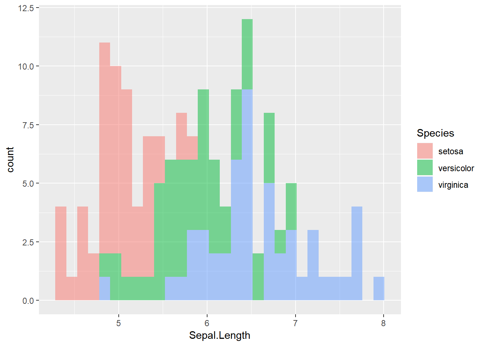

Code Highlighting with demoR
demoR.RmdIntroduction
The primary goal of the demoR package is to simplify the presentation of R code.
It is common to show source code, in addition to code output, as part of a conference talk, workshop, or lecture. Often, we want to call attention to certain aspects of the code.
For example, suppose you want to illustrate to a new learner the use of the pipe %>%. You might want to create a slide that shows the following:
iris %>%
group_by(Species) %>%
summarize(mean(Sepal.Length))## # A tibble: 3 x 2
## Species `mean(Sepal.Length)`
## <fct> <dbl>
## 1 setosa 5.01
## 2 versicolor 5.94
## 3 virginica 6.59Without demoR, your approach might be to type your code into your code chunk, copy-paste it to a string, and manually format that string using html. What a headache!
In this vignette, we will show you how to use the demoR package to simultaneously run and format code.
demo_code Objects
The core element of the demoR package is an object of the class demo_code. These objects contain both the natural output of your R code and information to let knitr know how display the source code.
Demoing from a code chunk
The cleanest way to make a demo_code object is through code chunk options in R Markdown. Simply set the chunk option demo to be a string containing a label for the set of code you intend to demo.
For example:
```{r, include = FALSE, demo = "how_to_pipe"}
iris %>%
group_by(Species) %>%
summarize(mean(Sepal.Length))
```
Then, you can reference the object by label to automatically create a demo_code object using create_demo(). Here we pass the object to hlt_fixed() to show our source code with the pipe operators highlighted in yellow.
```{r, echo = FALSE}
demo_chunk("how_to_pipe") %>% hlt_fixed("%>%")
```
Note that the create_demo step should be in a separate chunk from the code you are demoing, since it is not itself part of the source code you wish to display.
With the above two code chunks in our source file, the resulting knitted output looks like this:
iris %>%
group_by(Species) %>%
summarize(mean(Sepal.Length))## # A tibble: 3 x 2
## Species `mean(Sepal.Length)`
## <fct> <dbl>
## 1 setosa 5.01
## 2 versicolor 5.94
## 3 virginica 6.59Demoing from a code string
You can also use the demo_code() function to create a demo_code object directly from a string of R code. For example
produces
iris %>%
group_by(Species) %>%
summarize(mean(Sepal.Length))## # A tibble: 3 x 2
## Species `mean(Sepal.Length)`
## <fct> <dbl>
## 1 setosa 5.01
## 2 versicolor 5.94
## 3 virginica 6.59This option for demo_code creation is particularly nice if you want to show “bad” code that cannot normally be evaluated in a chunk. For example:
mean(1:10## Error: <text>:2:0: unexpected end of input
## 1: mean(1:10
## ^
The hlt_* functions
The advantage of a demo_code object is that you can add formatting to the source code without altering the output, through the suite of highlightint (hlt) functions
hlt_regexp
The main function you will use is hlt_regexp(). This takes as arguments:
A string or a
demo_codeobjectA regular expression
Any number of formatting parameters
If no formatting parameters are supplied, hlt_* will default to ordinary yellow-background highlighting.
hlt_regexp returns a demo_code object, so it is pipe friendly!
Suppose you want to highlight the pipe (%>%) in yellow, highlight the variable name Sepal.Length in pink, and change the text color of Species to blue
Your code chunk:
demo_code('
iris %>%
group_by(Species) %>%
summarize(mean(Sepal.Length))
') %>%
hlt_regexp(fixed("%>%")) %>%
hlt_regexp("Sepal.Length", background = "pink") %>%
hlt_regexp("Species", color = "CornflowerBlue")Your knitted output:
iris %>%
group_by(Species) %>%
summarize(mean(Sepal.Length))## # A tibble: 3 x 2
## Species `mean(Sepal.Length)`
## <fct> <dbl>
## 1 setosa 5.01
## 2 versicolor 5.94
## 3 virginica 6.59Syntax highlighting
demoR also includes a few shortcuts for highlighting specific aspsects of R source code. Currently, these functions are:
hlt_funs()for functionshlt_args()for arguments to functionshlt_input_vals()for values assigned to function arguments
For example:
demo_code('
ggplot(iris, aes(x = Sepal.Length, fill = Species)) +
geom_histogram(alpha = 0.5)
') %>%
hlt_args(color = "CornflowerBlue") %>%
hlt_funs(color = "Coral", underline = TRUE) %>%
hlt_input_vals(background = "Aquamarine") %>%
hlt_regexp("Sepal.Length", background = "pink")
ggplot(iris, aes(x = Sepal.Length, fill = Species)) +
geom_histogram(alpha = 0.5)## `stat_bin()` using `bins = 30`. Pick better value with `binwidth`.
Errata
Defining objects
One nice feature of a demo_code object, as compared to a string, it that it evaluates when run. This means that you can define objects in your demo code, and use them later in your analysis as you normally would:
foo mean(1:10)foo + 5## [1] 10.5A word of caution: Make sure you define your objects in your code string, not outside the demo_code() function! For example, the following approach has two problems:
foocontains thedemo_codeobject, not the result ofmean(1:10), sofoo + 5throws an error.The
demo_codeobject is stored asfoorather than printed, so no highlighted code is included in the knitted output.
## Error in foo + 5: non-numeric argument to binary operatorA note about colors
demoR gives you complete freedom to choose the colors of your highlighted elements, so long as the color name is a recognized html name or a hex code.
However, please remember to be judicious in your color choices, and to keep in mind how your colors appear to colorblind individuals.